Industrial Control Systems
I'll start by describing how my work in control systems fits into the overall field of control, since there are several branches of the subject, then move on to the things that I did and the technology I used in my various jobs.
Control of devices, machines and processes started out using mechanical and pneumatic techniques, but by the time that I entered the field things had mostly moved to the use of digital technology. However, other technologies are still used, particularly pneumatics.
It is a bit of a generalisation, but you can classify industrial control into three main classes:
- Embedded control; firmware that controls a specific device or part of a device, generally running at high speed and having limited interaction with its environment.
- Machine control; think bottle filling lines, conveyor systems, assembly robots; basically machines that put things together that can, in principal then be taken apart again, even if that means un-gluing, un-soldering or cutting welds.
- Process control; the moving around of fluids and powders and the causing of chemical reactions to take place; making products that generally can't be taken back to their constituent part.
My experience was entirely within the latter category. One thing that helped keep it interesting for 35 years was the fact that every project was different; different products being made with different processes, different equipment, different people and therefore different problems to solve.
If you start looking at control theory then you are launched into closed-loop transfer functions using Laplace transforms. Luckily for those implementing process control systems, people have already done the complicated maths and implemented the building blocks that you need to control an industrial process.
Just as 'control' can be divided into different types, so process control has two different flavours, continuous control and batch control. For a continuous process the aim is to reach a stable state as soon as possible and then to hold that state. So processes such as oil refining and bulk chemical manufacture have a continuous feed of raw materials and a continuous output of product, making changes only when the characteristics of the feed stock change or when a different specification of product is required. Making a batch of pharmaceutical on the other hand, takes measured quantities of ingredients and follows a recipe to produce a specific quantity of product. So a batch process is never in a stable state for very long; it is always moving from one state to another.
Both types of process require lots of measurements, opening and closing valves, starting and stopping pumps and maintaining process parameters such as temperature, pressure and flow over periods of time. For the latter, the most common approach is the use of a feedback control loop. You can see in the diagram that on the left we have a setpoint and on the right we have a measurement from a flow transmitter (the feedback). The controller needs to adjust the degree to which the control valve is open so as to achieve the requested flowrate (the setpoint).
{kind=link}
The vast majority of simple control requirements like this use a PID controller, which stands for Proportional, Integral, Derivative, because it consists of those three terms. The first term is proportional to the error (the difference between the desired value and the actual value), the second is related to the integral of the error over time and the third is based on the rate of change of the error. So the bigger the error, the longer the error has been present and the faster the error is increasing, the larger the change made to the controlling device. The constants K are then adjusted so as to 'tune' the loop so that the measured value follows the setpoint as closely as possible and reacts to changes as quickly as possible without overshooting or oscillating.
These simple control loops can be combined, known as cascading. For example, if you want to control the temperature of liquid in a tank, but the tank is heated by passing steam through the tank's jacket, then you are measuring temperature, but want to control the steam flow. So a temperature control loop provides the setpoint for a steam flow loop. Other techniques are used where many measurements need to be considered so as to control the process.
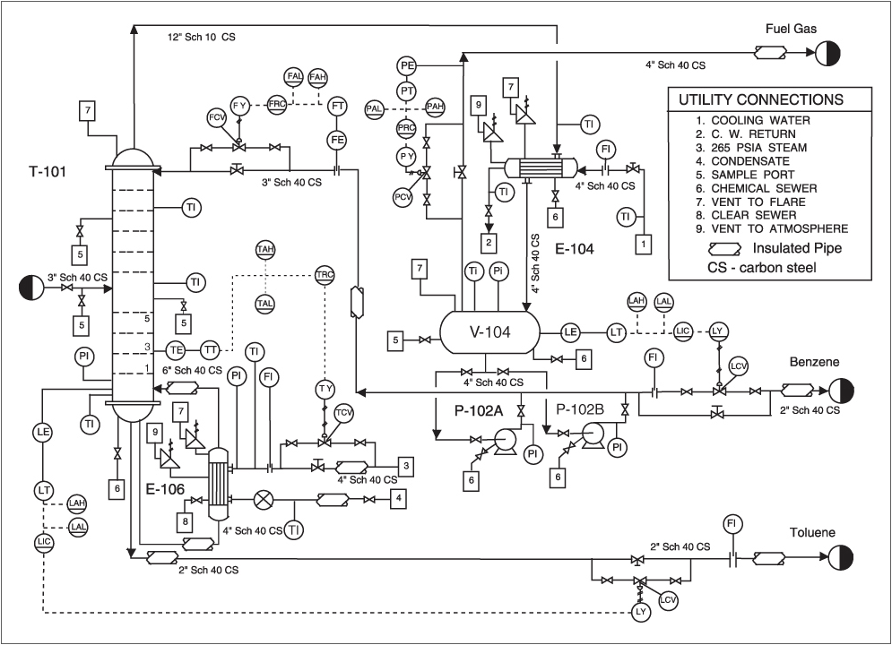There were three main inputs used for the design and implementation of a control system; a set of P&IDs, an instrument index and a set of control narratives. The P&IDs (Piping and Instrumentation Diagrams) defined all the vessels, pipework, valves, pumps, motors and sensors, along with the required control loops. Here is an example of the utilities around a distillation column.
The instrument index is basically a database, with an entry for every signal coming into the control system. These signals are generally analogue inputs and outputs (usually 4-20mA current loops) and digital inputs and outputs (usually 24V DC). Not only are there a few alternative signal types, but a range of instruments that use various types of serial communications.
Control narratives are, as the name suggests, written descriptions of the required control.
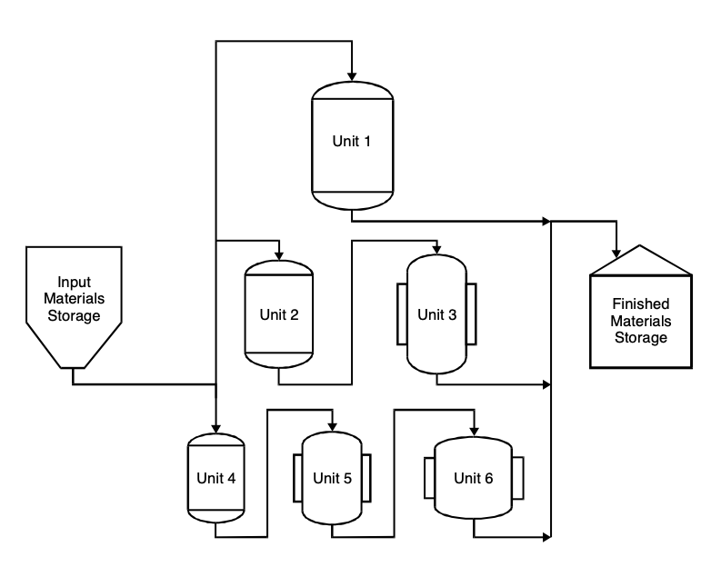A batch process is a little more difficult to describe. It is rather like a cake recipe, where you have a list of ingredients (including quantities) and a set of instructions on how to use those ingredients so as to make the product. Some of the steps may involve manual action, such as adding small quantities of materials. The diagram shows an hypothetical batch production plant. Multiple material storage tanks/bins can each supply one or more vessels that can react/filter/dry materials and transfer them to other vessels. A vessel my be evacuated and filled with Nitrogen before charging (adding ingredients) or heated and held at a recipe defined temperature for a period of time or until some measurement is satisfied. The vessels and pipework are also likely to require cleaning between batches and several batches may be in the plant at the same time, each at a different stage of the process. So, in addition to the P&IDs, Instrument Index and control narrative, there are a whole set of documents that define recipes and the sequential control required to make the product.
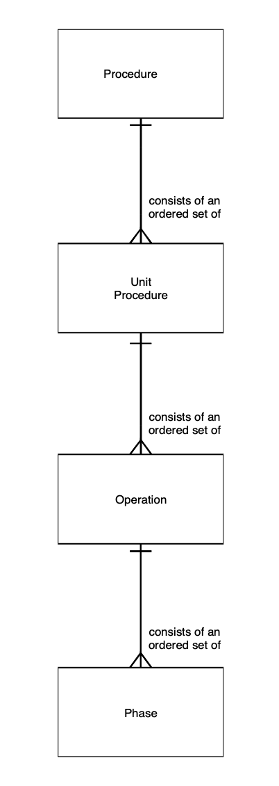 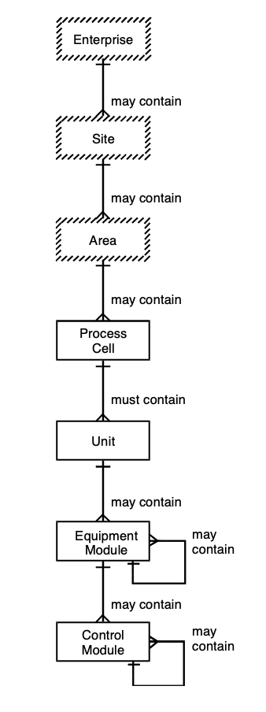Due to the complexity of batch processes, an international standard (ISA 88 and its European equivalent) defines a number of models to use as a reference. The physical model describes how the process equipment is broken up into parts, that can each be in a number of states, and the procedural model describes a set of 'levels' into which the control can be organised. Both these diagrams are taken from ISA 88.
I always found batch control much more interesting and so specialised in that. Luckily for me there was a shortage of people around the world who understood how to control a batch process and so I was involved in a number of interesting projects.
So, what did I actually do in the field of industrial process control? As I said previously, I joined Ferranti Computer Systems Limited (FCSL) in November 1978. Product development and manufacturing was done at Wythenshawe, but the project office was at Gatley, a few miles away.

FCSL designed and built their own range of mini-computers (the Argus 700 range at the time), along with all the other electronics needed to interface the computer to sensors and actuators to control process plant. They also wrote their own real-time operating system, compiler (for the Coral language) and utilities. This was the only photo of the Argus 700 that I could find. It just shows two 1.8 meter cabinets that house 19" racks of electronics. The top panel on the right allowed you to view and modify any register in the processor or any memory location. You could also step through the code, instruction-by-instruction, so it was quite a powerful diagnostic tool. We would also use it to load a bootstrap from paper tape or, as for one of our BP systems, the entire code!
Considering that FCSL was quite a small operation compared to the international companies such as Honeywell, Foxboro and Siemens, they were quite advanced in their applications. For example, on that BP system we had two Argus 700 computers, one to deal with charging ingredients and the other to control the rest of the PVC production process, so we had to write data-link software that would allow the two systems to communicate. But before long a distributed version of PMS was produced, where any system on the network could view displays from any other system on the network. They had also developed wide area network software that was used on the Shell North Sea Operations system. An early version of PMS was installed on a number of offshore platforms and all could be viewed from a control centre in Aberdeen, using a mixture of microwave and tropospheric scatter links. We were also linked in from Manchester and so could view all the offshore systems. Information from the platforms was also brought back to Aberdeen for use in a pipeline integrity system, again running on an Argus 700 computer.
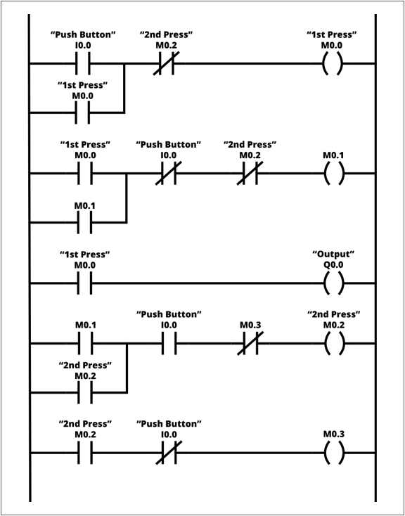My time at Realm presented a different side of control system technology. The Argus 700 was a 'mini computer', with a real-time operating system running an application level in the form of PMS. But Realm was a 'systems house' using Programmable Logic Computers (PLC), made by others such as Siemens, to apply logic and regulatory control to manufacturing processes. A lot of Realm's work was in the food industry, mainly because their parent company designed and built process plant for the food industry.
The main language used on PLCs is Ladder Logic. It has its origin in relay logic, where a collection of physical relays are wired together to transfer power from one side of the logic to the other. So PLCs were introduced as an electronic version of relay logic and used a programming notation that was familiar to those who were used to working with relays. The main problem is that ladder logic code soon becomes very complicated and difficult to maintain. As the applications broadened so regulatory control (PID loops) and other function blocks were added to the ladder logic. Communication between PLCs and to a PC running operator interface software were also added. This arrangement is sometimes referred to as SCADA systems; Supervisory Control and Data Acquisition. Suppliers such as Siemens provided both the PLCs and the SCADA software.
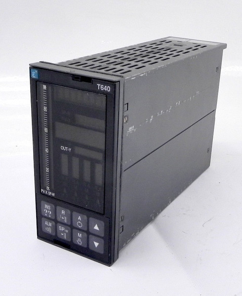After Realm collapsed I joined TCS, which designed and manufactured another type of control technology. Each company in the Eurotherm group specialised in a different aspect of industrial control, but made 'boxed' products. For example, Chessel made chart recorders, Eurotherm made temperature controllers, Shackelton Drives made motor controllers and TCS made a range of panel-mounted controllers and computing devices. The thing about the TCS devices was that they could be wired together to form a small system. Although each module had its own front panel that provided an operator interface, TCS also produced software to provide an operator interface on a mini-computer and a smaller, cheaper version that ran on a PC.
The T640 shown would run four PID loops as well as logic control and could communicate with other T640s and other T-series modules.
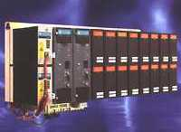There was also modules without a front panel, such as the T100, which had a number of plug-in input/output modules and redundant controller modules. This is actually a later version, but is similar.
I joined the Offshore Oil & Gas group who were selling large systems. Since their background was selling single modules and small, engineered systems, the TCS management were always uncomfortable with the selling of large systems and eventually shut down this group.
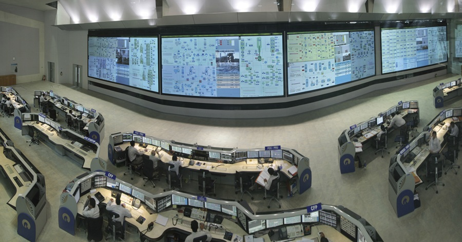So when I moved to Foxboro I was in the world of large Distributed Control Systems (DCS). In fact, one of the systems that I helped to bid was for an Indian refinery. This photo shows the control room. Each operator station has multiple monitors, there being two or three workstations per console. The wall displays are projections of specific operator displays to give an overview of the plant. The system, completed in 2008, is claimed to be the worlds largest integrated control and safety system with 300,000 process points (analogue and digital inputs and outputs). A lot of my time was spent supporting sales by designing system architectures and estimating the engineering effort (and therefore cost) required to implement them.
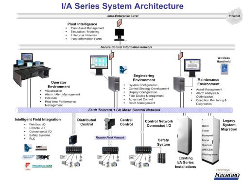A simplified view of the Foxboro I/A system is shown here. All the controllers and the control network are redundant, the network being what is known as a 'mesh', providing several paths between any two nodes.
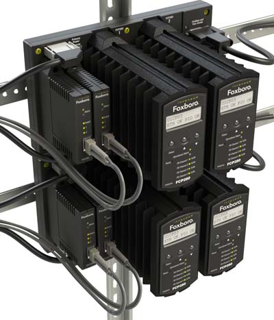This shows two redundant controllers with their fibre optic network connections.
A software company bought by Siebe (the owner of Foxboro before they merged to become Invensys) was WonderWare, who had a product called InBatch. This provided a batch control application layer above any control devices, typically PLCs.
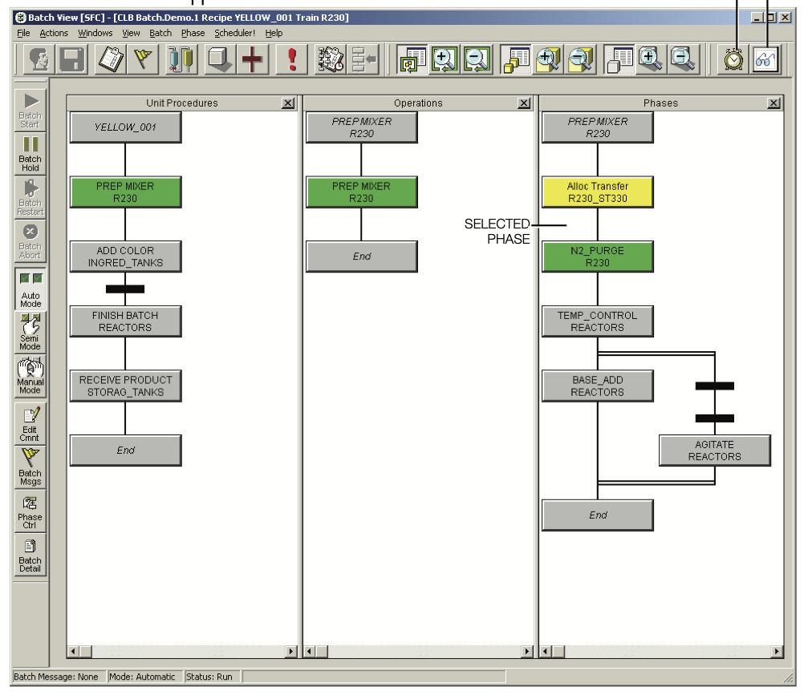However, a version was created for I/A Series, called FoxBatch. Any batch implementation required quite a bit of work down in the controller, but I became one of the batch control experts in the company. This resulted in working in Australia and Malaysia as well as involvement in projects in Scotland, Ireland and Austria.
Having been part of an international team that developed an engineering estimator tool, in 2007 I was invited to join another international team (known as Project CLASS) to look at ways to improve our engineering efficiency. This resulted in a new group being formed and a number of engineering tools being developed.
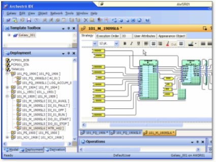I/A Series was originally introduced in 1987 and the control applications running in the controllers were basically a text file that parameterised each of a number of function blocks and the connections between parameters of those blocks. So, as a minimum, a PID controller consisted of an analogue input block, connected to a PID block, connected to an analogue output block. Every instance of a block has a name and so a parameter in one block could be connected to a parameter in another block anywhere in the system. I/A Series remained backwards compatible, so that modern controllers would execute control applications written in 1987, even though modern controllers would run additional blocks and updated blocks. Consequently all new tools produced the same format of file as the original 'fill-in-the-blanks' configuration tool. A more modern 'drag and drop' style control configuration tool is shown here.
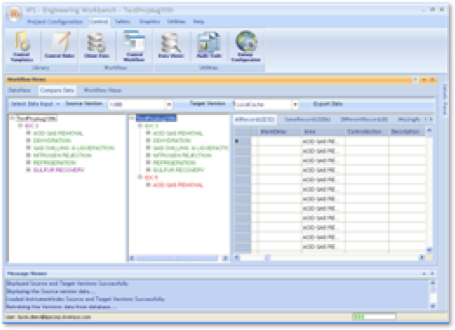Tools such as this allowed the user to define templates containing any combination of blocks and then to instantiate the template for various collections of input and output signals. However, it was still a fairly manual process. Clearly automation could be applied to the process, using rules associated with the naming convention being used on the client's site and the types of signals included in each loop. So, using a software development team based in Hyderabad we defined a bules-based tool that would automate the production of most of the control applications and the hardware design (networks and modules on baseplates in cabinets). At the time this was known as the Invensys Engineering Workbench, Invensys being the name of the company that owned the Foxboro brand, but it was really about the engineering process.
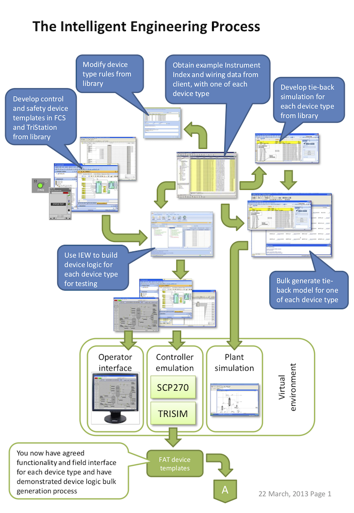 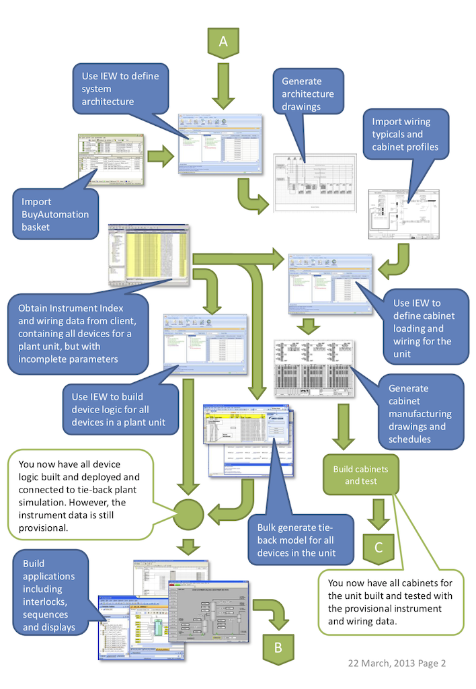 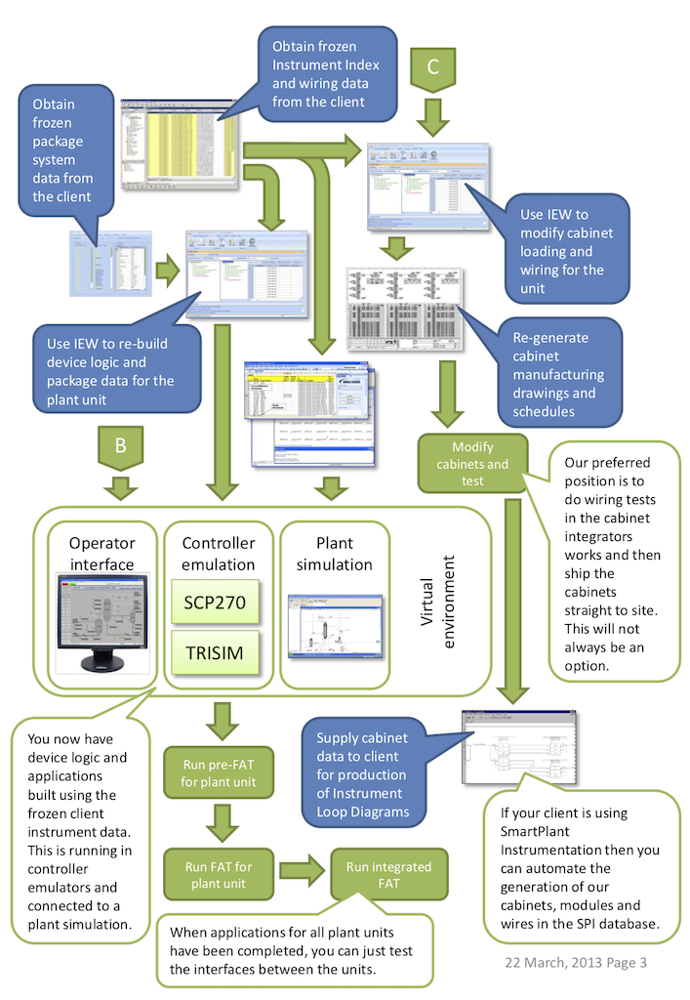For me, however, this tool was just a way of introducing to our engineers that there was a different way of working. I developed a concept that we called 'Lifecycle Engineering' that took things a stage further, including the automated configuration of process simulators, both for system testing and operator training. Unfortunately it was a step too far for our product and development management, most of whom had a different background (which did not include engineering systems) and their own technological agenda. So retirement came at just the right time.